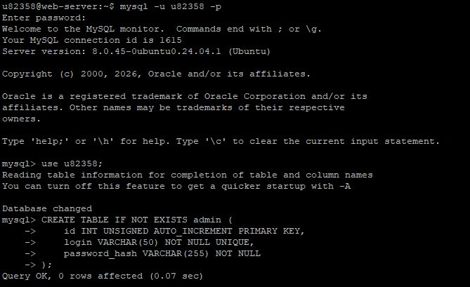
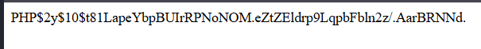
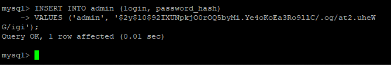

Создание таблицы `admin`, генерация хеша пароля и вставка учётной записи
Для работы административной панели необходима отдельная таблица, хранящая логин и хеш пароля администратора.
Таблица создаётся следующей SQL-командой:
CREATE TABLE IF NOT EXISTS admin (
id INT UNSIGNED AUTO_INCREMENT PRIMARY KEY,
login VARCHAR(50) NOT NULL UNIQUE,
password_hash VARCHAR(255) NOT NULL
);

Поле login – уникальное имя администратора.
password_hash – хранит хеш пароля, полученный через password_hash().
Пароль администратора никогда не хранится в открытом виде. Для его безопасного хранения используется хеширование. Создадим временный PHP-файл для генерации хеша:
<?php
echo password_hash('admin123', PASSWORD_DEFAULT);
?>
При запуске этого скрипта на сервере (например, hash.php) в браузере отобразится строка вида:
$2y$10$t81LapeYbpBUIrRPNoNOM.eZtZEldrp9LqpbFbln2z/.AarBRNNd.
Этот хеш будет использован при вставке записи администратора.

После получения хеша вставляем запись в таблицу admin. Используется INSERT для вставки.
INSERT INTO admin (login, password_hash)
VALUES ('admin', '$2y$10$t81LapeYbpBUIrRPNoNOM.eZtZEldrp9LqpbFbln2z/.AarBRNNd.');
💡 Если администратор уже был добавлен, можно обновить запись:
UPDATE admin SET password_hash = '$2y$10$...' WHERE login = 'admin';

После выполнения указанных шагов администратор может войти в панель (admin.php) с логином admin и паролем admin123. HTTP-авторизация сравнит введённый пароль с хешем из базы данных через password_verify().